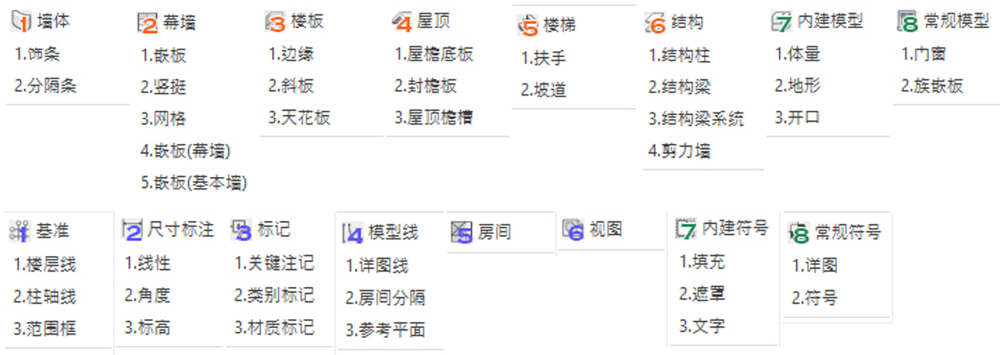
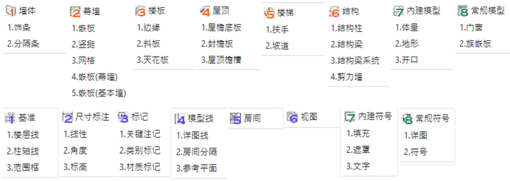

解决Revit自带筛选功能效能低下的问题，
可以文字清单的形式预先过滤要作筛选的物件
Select By Category 选取过滤器 (依类别) 主要分为三个区块:
1. 模型类: 三维的基本系统族单元如 墙体, 幕墙, 楼板, 屋顶, 楼梯, 结构
2. 注释类: 二维的基本系统族单元如 基准, 尺寸, 标签, 房间, 视图, 线段
3. 特殊类: 项目内模型或可载如族单元如 内建模型, 载入模型 ,内建符号, 载入符号

可以文字清单的形式预先过滤要作筛选的物件
Select By Category 选取过滤器 (依类别) 主要分为三个区块:
1. 模型类: 三维的基本系统族单元如 墙体, 幕墙, 楼板, 屋顶, 楼梯, 结构
2. 注释类: 二维的基本系统族单元如 基准, 尺寸, 标签, 房间, 视图, 线段
3. 特殊类: 项目内模型或可载如族单元如 内建模型, 载入模型 ,内建符号, 载入符号

勾选指定类别后即可在视图中进行筛选,

或是不选取元件直接点击完成, 生成子类别清单
或是点击右上方的 "展开类型清单" , 可跳过子类别的清单直接生成类型清单

*若该类别的元件数量或类型数量较多 跳过子类别直接列出类型清单需要等待较长时间
或是点击右上方的 "展开类型清单" , 可跳过子类别的清单直接生成类型清单
*若该类别的元件数量或类型数量较多 跳过子类别直接列出类型清单需要等待较长时间